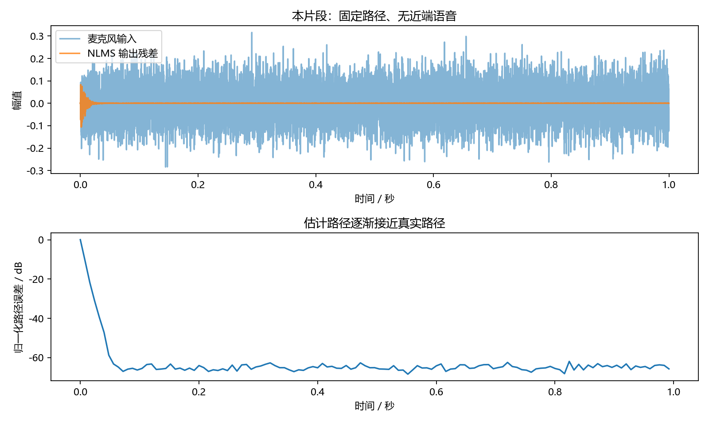
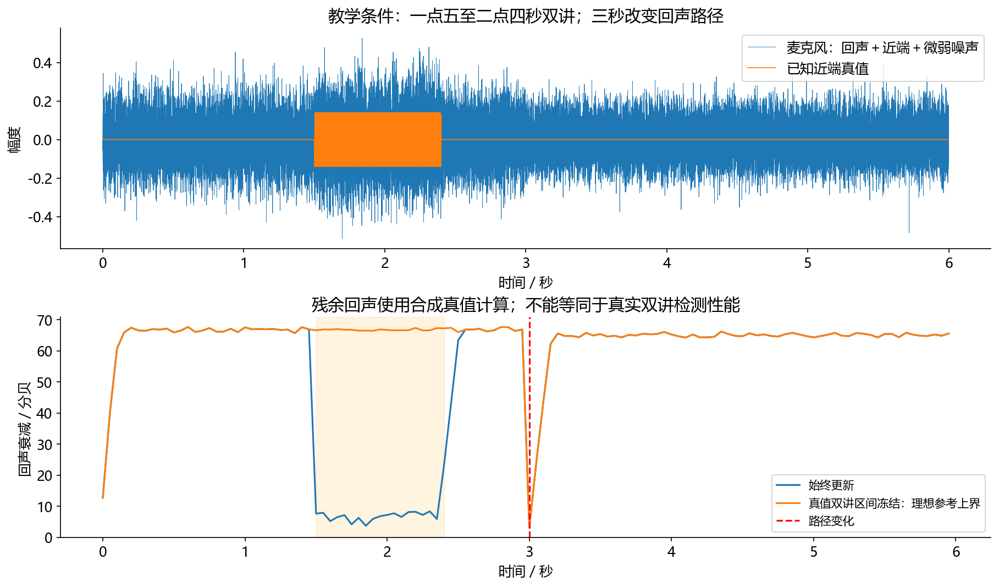

看图理解 · 跟着推演 · 对照真实结果
第08课 · 回声消除为什么先预测再相减
先建立直觉，再逐节讲原理、代码与结果；章节目录可定位学习。从一个系数的手算到多抽头NLMS，看到回声路径如何被逐步学到。
从直觉、原理，到代码与结果
本版保留导览小实验，增加教材逐节精讲、代码分段阅读和结果解释。三个项目另有本次真实模型短推理，第 12 课增加实际训练曲线。按右侧小节分次学习即可，不必一次看完。
完整文字、规范公式和注释代码仍在上方“读完整图文”。视频中的历史报告、教学算例与本次实测分别标明，短演示不冒充完整重训或设备验收。
先修：第07课FIR、向量内积、平方与分贝
- 解释参考、回声和近端语音
- 手算一次NLMS更新
- 从实际曲线读懂收敛与评测边界
本课覆盖清单与证据范围
- 学完本章，你应当能做什么
- 1. 两个人打电话，为什么对方听到自己的声音
- 2. 单抽头手算：梯度到底把参数推向哪里
- 3. 从 LMS 到 NLMS：同一步长不该随音量失控
- 4. 在真实的数组长度上跑一次，但仍承认它是仿真
- 5. 三种场景必须分开看
- 6. 为什么真实产品远不止几十行 NLMS
- 7. 排查表：别一失败就把 μ 调大
- 8. 练习答案与实习交付
结果从哪里来
- 导览中的小算例实际执行
- 原教材逐节讲解；正文代码/公式/图保留
固定无噪声线性路径教学仿真；没有真实通话、双讲检测、非线性扬声器或设备闭环验收。
新版视频时间轴已改变，单独记录续播位置；学习计划的完成勾选保持不变。
跟着运行：注释代码、实际输出与结果图
下面代码在生成本站时实际执行。这里只是教学小实验，不是完整模型训练或业务设备测评。
import numpy as np
rng = np.random.default_rng(8)
x = rng.normal(0, 0.1, 4000)
h = np.zeros(16); h[[2, 7]] = [0.7, 0.2]
d = np.convolve(x, h)[:len(x)] # 无近端的理想回声
w = np.zeros(16); history = np.zeros(16)
residual = np.zeros(len(x)); path_error = np.zeros(len(x))
for n in range(len(x)):
history[1:] = history[:-1].copy(); history[0] = x[n]
residual[n] = d[n] - w @ history # 先预测再求残差
w += 0.3*residual[n]*history/(history @ history + 1e-8)
path_error[n] = np.sum((w-h)**2) # 仿真才知道真实h
step = np.arange(len(x))
error_db = 10*np.log10(path_error/np.sum(h*h) + 1e-12)
print('前段RMS:', round(np.sqrt(np.mean(residual[:100]**2)), 6))
print('后段RMS:', round(np.sqrt(np.mean(residual[-100:]**2)), 6))
print('路径系数:', np.round(w[[2, 7]], 6))
本次实际输出
前段RMS: 0.038362 后段RMS: 0.0 路径系数: [0.7 0.2]

精讲中的代码、运行步骤与大图
代码片段用于逐行理解；真实运行结果仅限明确标注“本次实际”的部分。教材历史图保留原有实验范围。
代码精读 03 · 第1–9行
源码精读 / 教学片段，需配套环境与上下文，不等同于独立脚本。
w = 0.0
mu = 0.2
for _ in range(5):
x, d = 1.0, 0.5
# 先用旧权重预测，再根据本次误差更新。
estimate = w*x
error = d-estimate
w += mu*error*x
print(round(w, 6), round(error, 6))代码精读 04 · 第1–16行
源码精读 / 教学片段，需配套环境与上下文，不等同于独立脚本。
import numpy as np
def one_nlms_step(weights, history, microphone, mu=0.3):
# 向量内积模拟当前与历史参考经过估计路径的结果。
estimate = weights @ history
error = microphone-estimate
# 小正数避免静音时分母为零；不解决参考失配。
energy = history @ history + 1e-8
new_weights = weights + mu*error*history/energy
return new_weights, estimate, error
w = np.zeros(3)
history = np.array([1., 0.5, 0.])
w, echo, residual = one_nlms_step(w, history, 0.5)
print(w, echo, residual)
assert np.allclose(w, [0.12, 0.06, 0.], atol=1e-7)代码精读 05 · 第1–18行
源码精读 / 教学片段，需配套环境与上下文，不等同于独立脚本。
import sys
import numpy as np
from scipy.signal import lfilter
sys.path.insert(0, "code")
from audio_core import nlms
rng = np.random.default_rng(7)
x = rng.normal(0, 0.1, 16000)
h = np.zeros(32)
# 三个反射分量都处于滤波器可表示的 32 抽头之内。
h[[5, 12, 22]] = [0.7, 0.25, -0.1]
true_echo = lfilter(h, [1.], x)
microphone = true_echo + rng.normal(0, 0.0001, len(x))
estimate, residual, trace = nlms(x, microphone, taps=32, mu=0.3)
# 只评后半段，并用已知回声真值隔离背景噪声。
tail = slice(8000, None)
remaining_echo = true_echo[tail]-estimate[tail]
erle = 10*np.log10(np.mean(true_echo[tail]**2) /代码精读 05 · 第19–36行
源码精读 / 教学片段，需配套环境与上下文，不等同于独立脚本。
(np.mean(remaining_echo**2)+1e-12))
print("理想仿真尾段 ERLE：", erle)
assert erle > 20
# 绘制本片段的真实输出与路径学习过程，不调用其他实验的图片。
from pathlib import Path
import matplotlib
matplotlib.use("Agg")
import matplotlib.pyplot as plt
plt.rcParams.update({"font.family": "Microsoft YaHei", "axes.unicode_minus": False})
fig, axes = plt.subplots(2, 1, figsize=(10, 6))
time = np.arange(len(x))/16000
axes[0].plot(time, microphone, alpha=0.55, label="麦克风输入")
axes[0].plot(time, residual, alpha=0.8, label="NLMS 输出残差")
axes[0].set(title="本片段：固定路径、无近端语音", xlabel="时间 / 秒", ylabel="幅值")
axes[0].legend()
# trace 每隔 128 点记录一次参数；这里评估参数误差，不称为 ERLE。
misalignment = np.sum((trace-h)**2, axis=1)/np.sum(h**2)代码精读 05 · 第37–44行
源码精读 / 教学片段，需配套环境与上下文，不等同于独立脚本。
axes[1].plot(np.arange(len(trace))*128/16000, 10*np.log10(misalignment+1e-12))
axes[1].set(title="估计路径逐渐接近真实路径", xlabel="时间 / 秒", ylabel="归一化路径误差 / dB")
fig.tight_layout()
out = Path("tutorial/figures/ch08_aec_convergence.png")
out.parent.mkdir(parents=True, exist_ok=True)
fig.savefig(out, dpi=160)
plt.close(fig)
print("已保存运行图：", out.as_posix())结果读图 05 · 4. 在真实的数组长度上跑一次，但仍承认
原教材运行记录

原教材已存图 不是本次新测 先确认实验范围 再解释坐标与单位
结果读图 06 · 5. 三种场景必须分开看
原教材运行记录

原教材已存图 不是本次新测 先确认实验范围 再解释坐标与单位
闭卷自测：单抽头，x=2、d=1、w=0、μ=0.2，忽略ε时NLMS的新w是多少？
旧预测0，残差1；增量0.2×1×2/(2²)=0.1，所以新w=0.1。相同条件LMS为0.4。
逐字讲稿 · 可定位回看
你开免提和朋友聊天。朋友的声音从你的扬声器出来，又进入你的麦克风；同时，你也在讲话。麦克风收到的是混合物，而不是一条单独的回声。
只看某一时刻的归一化数字：回声贡献 0.5，你的声音贡献 0.3，暂时忽略其他噪声。麦克风数值就是 0.8。 如果算法准确预测回声为 0.5，减完得到 0.3，正好保留你的声音。注意真实音频有正有负，此处只选一个好手算的时刻。
如果只预测出 0.4，减完剩 0.4。里面既有你的 0.3，也有没消净的 0.1 回声；这 0.4 叫残差，不能全部算成残余回声。 把输出全部压成零，也能得到很小的总能量，但你的声音也没了。评价必须同时考虑去回声和保留近端语音。
视频通话中，朋友的声音从你的扬声器播放，又被你的麦克风收到，网络把它送回朋友那里。对方听到的是自己声音的延迟副本。回声消除要阻断这一圈，而不是把所有人声都压低。
设备知道扬声器准备播放什么，这一路叫参考。它不知道声音经过房间以后怎样变化，所以还要估计传播路径。麦克风同时收到你的声音，你的声音是目标，不是应该消掉的噪声。
如果你直接把播放数组从麦克风数组里相减，时间可能没对齐，反射也没建模。我们今天先把房间简化成一个系数，再扩展成多个历史系数，理解为什么必须先预测再相减。
先假设房间只把声音乘零点五，没有延迟。当前参考等于一，麦克风因此收到零点五。我们最初把路径系数猜成零，预测回声为零，残差就是零点五。
残差等于麦克风减预测，不是一个神奇的干净信号标签。现在没有本地语音，所以残差全是没消掉的回声；以后加入本地语音，同一个残差里也会包含必须保留的目标。
这一步要明确三个量的角色：真实路径只在仿真中已知，参数是算法的猜测，预测是参数作用于参考得到的声音。算法不能直接读取仿真答案来更新，否则就失去辨识的意义。
我们希望残差平方变小。残差是麦克风减去参数乘参考，因此参数增大一点，残差会减少参考那么多。链式法则给出损失对参数的导数，等于负的残差乘参考。
梯度下降需要减去梯度，而梯度本身带负号，所以更新中出现加号。步长取零点二，当前误差零点五、参考一，参数从零更新到零点一。下一次同样输入，更新到零点一八。
先用旧参数预测，再按这次误差更新。打印出来的旧误差和新参数不是同一时刻的状态，读日志时要分清。参数正在靠近零点五，但不是一步得到正确答案。
多条反射需要多个系数。我们把当前和历史参考排成向量，参数与它的内积就是预测。普通更新会受输入幅度影响；参考变得很响，同一个步长可能产生过大的改动。
归一化最小均方，也就是 NLMS，在更新时除以这段参考的平方和。分母是输入向量能量，不是另一个降噪器。小正数用于防止静音附近除零，其单位尺度需要与输入平方匹配。
看一个数字：历史是一个和零点五，能量为一点二五；误差零点五，步长零点三，两个系数增量分别是零点一二和零点零六。归一化没有让路径变短，也不能修正拿错声道。
代码生成四千个随机参考采样，并设定两条路径：延迟两点、幅度零点七；延迟七点、幅度零点二。它们都在十六个抽头能够表示的范围内，所以不存在故意遗漏的长延迟。
用参考与真实路径卷积，得到麦克风回声。这里没有本地说话、没有背景噪声，也没有扬声器失真。这个理想化不是为了冒充产品，而是先确认预测、误差和参数更新的代码是否接对。
宽带随机参考能够激励许多频率，通常比单一正弦更适合辨识多抽头路径。一个正弦只给有限信息，即使输出误差很小，也未必把整个路径都识别正确。
前几行创建参考、真实路径和麦克风。参数数组与历史数组的长度都是十六。它们是一维向量，不需要人为添加批次轴，否则矩阵乘法的含义容易在不知不觉中改变。
循环先把旧历史向后移，再把当前参考放在最前。内积得到预测，麦克风减它得到残差。这里复制切片是为了清楚表达移动过程，避免让新手误以为每个位置能任意就地覆盖。
接着使用残差更新参数，最后计算参数与真实路径的平方差。请注意，真实路径只出现在记录误差这一步，不参与更新。现实没有路径真值时，这条曲线不能直接从通话录音算出来。
横轴是处理了多少个采样，纵轴是归一化路径误差的分贝表示。数值越低，估计系数越接近我们设置的真实路径。这不是回声衰减指标 ERLE，不能把纵轴名称随意换掉。
开始参数全为零，随后误差下降。最后打印两个位置的系数，应接近零点七和零点二；残差的后段均方根也比前段小。图和输出都来自刚才代码的实际计算。
曲线底部设了数值下限，防止对零取对数。接近这个下限不表示设备真的能实现如此极端的回声衰减，只说明这个无噪声、固定线性路径的教学问题很容易被精确拟合。
只有远端说话时，可以比较专注地学习回声路径。只有本地说话时，最重要的是保持本地声音。当双方同时讲话，残差里既有预测误差，也有你自己的语音，更新会受到干扰。
如果只追求输出能量最小，把本地语音也压掉，数字可能很好看，通话却失败了。真实双讲没有单独回声真值时，不能把输出总能量直接当作残余回声能量来计算漂亮的指标。
仿真可以利用已知本地活动区间冻结更新，作为机制对照。但这不是已经做出了可靠双讲检测；如果路径恰好在双讲时变化，一直冻结又可能无法跟踪，所以需要有针对性的实验。
第一，参考必须对应实际播放的内容。如果参考在软件里被重采样，而麦克风又有另一种时钟，时间关系可能逐渐漂移。第二，整体延迟与尾长都必须被模型或者前置对齐覆盖。
第三，分块处理必须保留历史与权重。每一块都重新开始学习，会不断回到刚才曲线的开头。设备移动以后路径改变，则应该观察恢复过程，而不是仅截取早先收敛的漂亮一段。
真实扬声器还有削波和非线性，线性 FIR 不一定能够拟合。实习作品可以先做固定路径、路径切换、延迟失配和双讲四组对照，逐一说明失败原因，不必冒称达到商用通话算法。
暂停视频：只有一个抽头，参考为二，真实回声为一，初始参数为零，步长零点二。普通 LMS 的增量是零点二乘一再乘二，得到零点四。先确认你没有把误差也写成二。
同样条件下忽略保护小数，NLMS 还要除以参考平方四，所以增量是零点一。这个具体差别说明归一化改变了更新对幅度的敏感性，但它不能保证任意设置都稳定。
下一步亲自把路径第二个延迟改到二十点，却仍保留十六抽头，观察误差为何降不下去。记录改动、曲线和解释，再恢复正确配置。这种能够复现并解释的失败，比背更新公式更接近实习能力。
长度为三的参考历史可以写成当前播放样点、前一个、前两个。权重分别描述三个延迟位置怎样影响麦克风。两者内积就是此刻预测的回声，不是预测近端说话内容。
麦克风减预测回声得到残差。只有远端回声且模型足够时，残差变小通常意味着路径估计更好；出现近端说话时，残差还含需要保留的语音，不能一味把它压到零。
归一化分母是参考历史的能量加稳定项。稳定项处理接近静音时的除零风险，不是随便越大越好。步长太大可能震荡，太小则跟踪房间变化很慢。
双讲时朋友和你同时说话。若算法把你的声音也当成预测误差去追，权重可能被错误更新。实际系统通常需要双讲检测、更新控制和残余回声处理，简单NLMS只覆盖其中一部分。
把手机从桌上拿起来会改变回声路径。即使没有双讲，旧权重也会暂时失配，需要观察重新收敛的过程。评测可以把路径切换时刻标在图上，别只报全段平均ERLE。
扬声器削波会产生输入参考里没有的非线性关系，线性滤波器无法完整表示。此时增加滤波器长度可能帮助有限，先检查播放饱和、时延对齐和采样时钟漂移。
能解释视频通话回声的来源；用一支笔算出一次 LMS 更新；运行课程的 NLMS；分清残差、残余回声和近端语音；
设计双讲、延迟失配、路径变化三类测试。先学第 07 章的 FIR，
再读本章。建议用两小时读懂与手算，再用两至三小时完成改参实验。
你与朋友视频聊天。朋友说的声音从你的扬声器出来，又被你的麦克风收进去，随后网络把它传回朋友那边。朋友就听到了自己的延迟副本。你的任务不是“把录音里的说话声都压下去”，而是保留你自己的声音，去掉从扬声器绕回麦克风的那部分。
AEC，即 Acoustic Echo Cancellation，利用设备知道的播放信号预测回声。可以把它想成一张“房间复印机”的说明书：知道原稿，估计复印过程，然后减掉复印件。但类比有边界：复印过程不是简单乘一个音量系数，它包含传播延迟、墙面反射、扬声器频响、可能的非线性和时钟变化。
因此不能直接做“麦克风减播放参考”。在播放参考出现某个采样时，麦克风可能还没收到；等麦克风收到时，它已经混合了多个历史采样的反射。
符号：x[n]。含义：远端播放参考。单位与形状：本例归一化幅值，单通道序列。
符号：h[k]。含义：真实声学路径。单位与形状：长度 L 的系数，通常未知。
符号：r[n]=求和下标k=0的幂L-1h[k]x[n-k]。含义：进入麦克风的真实回声。单位与形状：与麦克风幅值单位相同。
符号：s[n]。含义：本地要保留的近端语音。单位与形状：并非噪声。
符号：v[n]。含义：其他背景噪声。单位与形状：未必与参考相关。
符号：d[n]=r[n]+s[n]+v[n]。含义：麦克风观测。单位与形状：算法实际可见。
符号：估计 y[n]、e[n]=d[n]-估计 y[n]。
含义：预测回声、输出残差。单位与形状：残差不等于纯残余回声。
记忆方法：参考告诉你“播了什么”，滤波器学习“怎么绕回来”，残差是“减完以后还有什么”。
先把所有反射简化成一个音量系数。真实路径是 h=0.5，这一刻 x=1，没有本地语音或噪声，所以 d=0.5。你的初始猜测为 w=0，预测 估计 y=wx=0，误差 e=0.5。
定义需要减小的量 J=（e的幂2）除以（2）。因为 e=d-wx，对 w 的导数为 -x，所以 （dJ）除以（dw）=-ex。梯度下降要减去梯度，因此更新变成：
取 mu=0.2，第一次更新到 0.1。下一次若输入还是一，预测为 0.1，误差为 0.4，再更新到 0.18。方向是对的：系数逐渐接近 0.5。这里的加号不是经验口诀，而是误差定义和求导共同决定的。 如果换一种误差符号，必须重新检查推导。
现在把本地语音设为 s=0.8，麦克风就变成 d=1.3。若仍只追求让总残差尽可能小，单抽头可能被推向 1.3，而不是真实路径 0.5。这解释了“双讲时不能盲目相信误差”的直觉：误差里含有要保留的东西。
注意这只是恒定参考、恒定本地分量的手算反例，不能推出“双讲必然把最优系数变成 1.3”。若近端语音与远端参考在统计上不相关，理想均值模型中的目标路径不一定改变；但有限数据下的梯度扰动、较大步长和非平稳语音仍会让跟踪变差。工程上必须同时测近端保真和参数稳定性。
先在纸上预测前两行，再运行。这个片段只有一个抽头和恒定输入，仅用于理解更新方向，不是足以辨识真实长路径的输入设计。 本轮实际运行的前两行分别是 0.1 0.5 和 0.18 0.4；第一列是更新后的参数，第二列是本次更新前计算的误差。第五次参数达到 0.33616，尚未达到 0.5，不要把“方向正确”误读成“一步就学会”。
先看中文注释：先用旧权重预测，再根据本次误差更新。。这几行仍属于2. 单抽头手算：梯度到底把参数推向哪里的同一处理链，输入变量沿用前一段，不是一个独立程序。
打印是观测点。把这里的真实值与理论预期比较，若不一致应保留输出排错，而不是手工改成期望数字。
先看中文注释：先用旧权重预测，再根据本次误差更新。。打印是观测点。把这里的真实值与理论预期比较，若不一致应保留输出排错，而不是手工改成期望数字。
参数向量为 w下标n，预测是内积 估计 y[n]=w下标n的幂 Tx下标n。上标 T 表示转置，粗体表示向量。LMS 更新就是把上面的标量乘法换成向量。
如果参考幅度放大十倍，相关梯度尺度会明显变化，同一个步长容易变得过激。NLMS 用当前参考向量的能量归一化：
分母中的 x下标n的幂 Tx下标n 是参考向量的平方和，不是“再做一次降噪”，而是把更新大小与输入能量关联起来。varepsilon 是防止静音附近除零的小正数。它无法修复错误的参考声道，也无法让不足的抽头突然表示几秒钟的回声路径。
本轮实际输出为权重 [0.12,0.06,0]、旧参数预测 0.0、本次残差 0.5。它仍是单步数值核验，不需要画一条虚假的收敛曲线。
history 长度等于抽头数，顺序从最新到最旧；@ 计算内积。weights 与 history 都是一维数组，
不需要误加 batch 维度。函数先用旧参数预测，再用本次误差更新；若更新与预测顺序搞反，你验证的就不是这一步算法。
先看中文注释：向量内积模拟当前与历史参考经过估计路径的结果。。这几行仍属于3. 从 LMS 到 NLMS：同一步长不该随音量失控的同一处理链，输入变量沿用前一段，不是一个独立程序。
先看中文注释：小正数避免静音时分母为零；不解决参考失配。。零数组用于初始化缓冲或状态。流式处理时只在会话开始清零，不应在每个新音频块到来时重置历史。
断言把预期写成可失败的检查。通过只说明这一条件成立，不自动代表声音质量或全部场景合格。 打印是观测点。把这里的真实值与理论预期比较，若不一致应保留输出排错，而不是手工改成期望数字。
从课程根目录 audio-course-zh 运行下面片段。它只使用合成随机参考，不下载音频，也不接扬声器：
先看上图：开始时残差还较大，随后显著减小。再看下图：估计路径的误差下降后在弱噪声条件下波动，这条纵轴越低越好；它是参数误差，不是越高越好的 ERLE。图中没有近端语音和路径突变，因此还不能评判双讲表现。
本轮运行得到尾段 ERLE 约 64.78 dB，全部断言通过。这个大数字依赖白噪声激励、固定线性路径、正确抽头覆盖和很弱背景噪声，不能外推成实际会议通话性能。 h 的三个非零位置表示三个延迟不同、幅度不同的传播分量；负系数允许相位反转，不代表负能量。lfilter 生成真实回声。测试只在后半段计算，避免把启动学习与稳态混为一个数字。白噪声参考有丰富激励，线性固定路径又完全匹配，结果会比真实语音设备好得多。
这一小段承接“4. 在真实的数组长度上跑一次，但仍承认它是仿真”的前后文。注意画面中的循环范围、索引和返回位置：循环内执行每一步，循环外只做汇总。完整可运行入口仍以配套教材为准。
先看中文注释：三个反射分量都处于滤波器可表示的 32 抽头之内。。零数组用于初始化缓冲或状态。流式处理时只在会话开始清零，不应在每个新音频块到来时重置历史。
先看中文注释：只评后半段，并用已知回声真值隔离背景噪声。。对数压缩动态范围。先确认输入非负并加小正数防止对零取对数；振幅比与功率比的分贝系数不同。 mean沿指定轴求平均。保留时间轴还是声源轴，会改变统计对象，所以必须核对axis或dim。
先看中文注释：绘制本片段的真实输出与路径学习过程，不调用其他实验的图片。。mean沿指定轴求平均。保留时间轴还是声源轴，会改变统计对象，所以必须核对axis或dim。 断言把预期写成可失败的检查。通过只说明这一条件成立，不自动代表声音质量或全部场景合格。
arange按固定步长生成索引。若随后除以采样率，才把采样点编号换成秒。 绘图展示的是传入数组。核对横轴单位、图例与统一尺度后，才可以比较不同处理的变化。
先看中文注释：trace 每隔 128 点记录一次参数；这里评估参数误差，不称为 ERLE。。sum沿指定维度累加。它不是平均值，样本数或维度改变时量级也可能改变。 绘图展示的是传入数组。核对横轴单位、图例与统一尺度后，才可以比较不同处理的变化。
arange按固定步长生成索引。若随后除以采样率，才把采样点编号换成秒。 对数压缩动态范围。先确认输入非负并加小正数防止对零取对数；振幅比与功率比的分贝系数不同。 绘图展示的是传入数组。核对横轴单位、图例与统一尺度后，才可以比较不同处理的变化。
打印是观测点。把这里的真实值与理论预期比较，若不一致应保留输出排错，而不是手工改成期望数字。 绘图展示的是传入数组。核对横轴单位、图例与统一尺度后，才可以比较不同处理的变化。
arange按固定步长生成索引。若随后除以采样率，才把采样点编号换成秒。 对数压缩动态范围。先确认输入非负并加小正数防止对零取对数；振幅比与功率比的分贝系数不同。 打印是观测点。把这里的真实值与理论预期比较，若不一致应保留输出排错，而不是手工改成期望数字。
先看这张随教材保存的图。本节 16000 点 NLMS 片段实际运行后的输入、残差与路径误差。。本次视频引用既有结果，不把它称为新运行。
横轴、纵轴、图例和单位决定图在回答什么问题。若曲线重合，先问它验证的是数值等价、形状还是算法质量。图像相似不自动证明真实业务效果相同。
把图中观察与本节假设联系起来，再回到前面的代码确认数组来源。合成信号实验、历史报告和真实模型输出属于不同证据范围，不能混成同一个成绩。
远端单讲：只有扬声器播放，适合学习路径和观察回声抑制。近端单讲：只有本地人在说话，重点是不能误伤本地声音。双讲：双方同时说话，既要减回声，又要保住本地声音，更新策略也更难。
图来自已运行的 code/run_experiments.py，记录在 results/dsp_results.json。它是下面讨论的完整六秒实验，不是上一节 16000 点小片段的运行截图。上一节看自己的打印值；本图用来研究双讲与路径变化，数据条件不同。
按时间轴读图：前段远端单讲，参数逐渐学到路径；约 1.5—2.4 秒加入本地成分，盲目持续更新会污染参数；3 秒改变声学路径，旧参数不再合适，需要重新学习。曲线暂时掉下去不一定是代码错误，也可能是实验有意改变了环境。
其中“真值冻结”用合成时已知的近端活动位置暂停更新。这是理想对照，不是已经实现了可靠双讲检测，也不是所有条件下的性能上界。
课程曾测得该对照在这一实验中显著优于盲目更新，只能用于解释机制，不能直接写成真实通话优化成绩。若双讲期间路径也在变化，完全冻结反而会失去跟踪机会。
ERLE 通常表达消除前后回声能量比。合成实验可以用已知真实回声计算；真实双讲录音没有独立回声真值时，不能拿“回声＋本地语音＋噪声”的总输出硬当纯回声残留。否则把本地语音压没了，指标也可能虚假变好。
先看这张随教材保存的图。六秒 AEC 教学实验。上方看输入和近端活动，下方看回声衰减如何随场景变化。。本次视频引用既有结果，不把它称为新运行。
横轴、纵轴、图例和单位决定图在回答什么问题。若曲线重合，先问它验证的是数值等价、形状还是算法质量。图像相似不自动证明真实业务效果相同。
把图中观察与本节假设联系起来，再回到前面的代码确认数组来源。合成信号实验、历史报告和真实模型输出属于不同证据范围，不能混成同一个成绩。
首先要找对参考：参考必须对应实际播放内容，并考虑音量、重采样、设备处理与延迟。其次要处理长路径，直接逐样本长 FIR 的运算量可能很大，
工程中可使用分块或频域自适应结构。再次要处理双讲、路径突变、采样时钟漂移、参考丢失和扬声器非线性。线性预测后还可能需要残余回声抑制，但不能无限压制近端语音。
WebRTC 的音频处理模块将 AEC、噪声抑制和增益控制等作为配合工作的组件，这能帮助理解产品的系统边界，不表示本教程几十行代码已经达到同等成熟度。WebRTC APM 官方说明
现象：一直不收敛。先怀疑什么：参考不对应、延迟超出滤波器范围。最小验证：合成已知 5 点延迟核验。
现象：一大声就失稳。先怀疑什么：步长、削波、扬声器非线性。最小验证：降低输入幅度，查看峰值。
现象：本地说话后效果恶化。先怀疑什么：双讲污染。最小验证：用已知真值冻结做机制对照，不当通用上界。
现象：搬动设备后暂时变差。先怀疑什么：路径改变、跟踪太慢。最小验证：明确切换路径时刻。
现象：长时间后逐渐变差。先怀疑什么：时钟漂移、缓存偏移。最小验证：跟踪参考与麦克风的相对延迟。
现象：指标很好但听不清人声。先怀疑什么：指标把目标语音当干扰。最小验证：单独评估近端失真和双讲。
练习一：真实路径 0.5、x=2、w=0、mu=0.2、无近端时，一次 LMS 更新多少？d=1,e=1，所以更新后 w=0.4；同条件忽略 varepsilon 的 NLMS 更新为 0.1。这说明归一化确实改变了输入幅度敏感性。
练习二：16 kHz、64 抽头覆盖多长的系数窗口？64 个采样约 4 ms；最后一个抽头相对第一个的延迟为 （63）除以（16000） 秒。真实回声的整体延迟和尾长都要考虑，不能只听见“64”就认为够长。
练习三：双讲时冻结一定最好吗？不一定。冻结能减少近端语音对更新的干扰，却无法同时跟踪正在改变的路径；真值冻结只是利用已知活动标签的理想对照，真实检测还会误判。
实习作业：交付一个 AEC 故障实验集，包含远端单讲、近端单讲、双讲、路径切换、额外延迟、软饱和六种情况。
每种保存配置、输入输出、曲线和失败解释。报告起始收敛、路径切换恢复、近端保真及处理耗时，不只报告最大 ERLE。
简历可写“实现并评测 NLMS 基线，设计双讲与失配消融”，但只有你实际完成后才能写，且必须标注仿真条件。
适用边界与参考正文
固定无噪声线性路径教学仿真；没有真实通话、双讲检测、非线性扬声器或设备闭环验收。
教学图与实验图由本站整理生成；项目代码、预训练模型和公开数据的来源见配套正文。旁白是本地中文语音合成，不是教师真人录音，也不是 NotebookLM 生成。没有向 Google 上传项目材料。